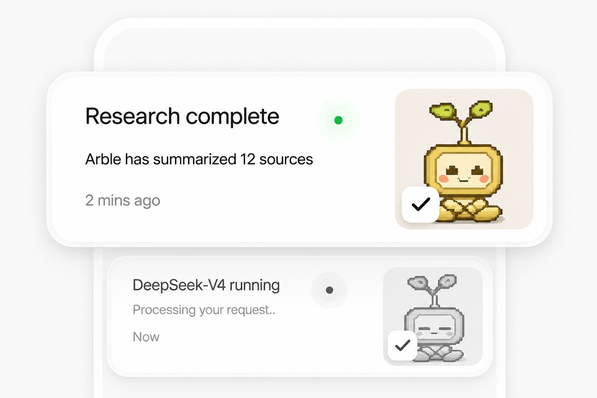
See every tool call, permission prompt and background run the moment it happens

Arble runs the whole agent loop on the device in your hand — the tools, the memory, the permission gate and the model router. Your keys never leave the enclave, your context never leaves the phone, and the work carries on whether or not you are watching.
Built for the modern AI ecosystem

See every tool call, permission prompt and background run the moment it happens
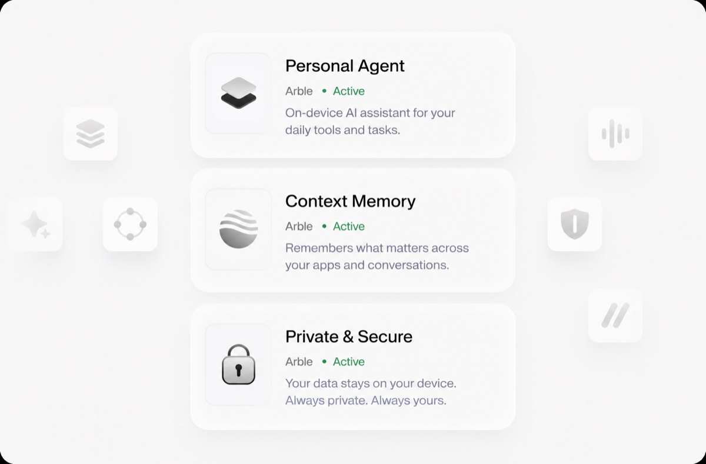
Agent, memory and permissions run as one on-device system, not three add-ons
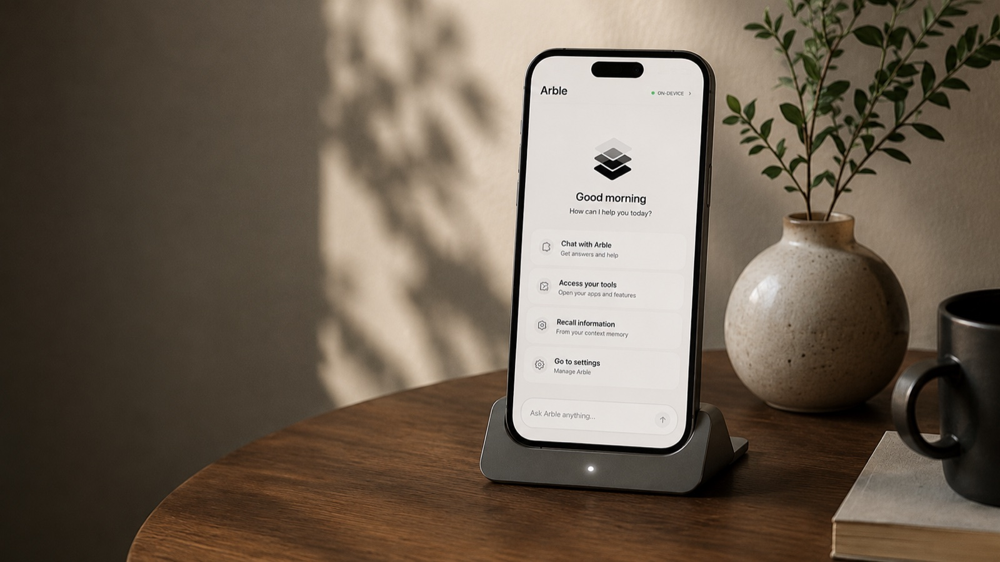
Understand where your tokens, time and context go — measured on-device
Arble handles the work you would otherwise do by hand — reading the mail, holding the context, calling the tool, asking before it writes. From a single question to a schedule that runs while the app is closed, it all happens in one place, on hardware you already own. As you hand it more, the runtime takes it without new accounts, new servers or new bills.
The agent loop, your keys and your context stay on the hardware you own. There is no Arble server in the path.
Schedules and heartbeats keep agents working while the app is closed, and every wake-up is logged for you to read back.
Swap one model for another, add a toolset, run more agents at once — nothing above the router has to change.
Every write stops to ask, every answer keeps its sources, and every job it runs reports back when it is done.
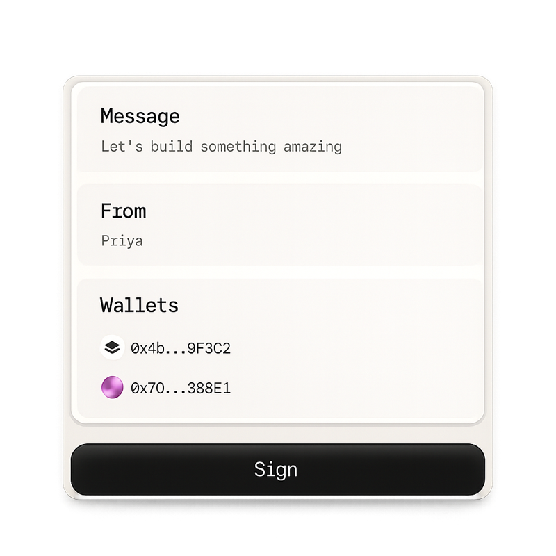
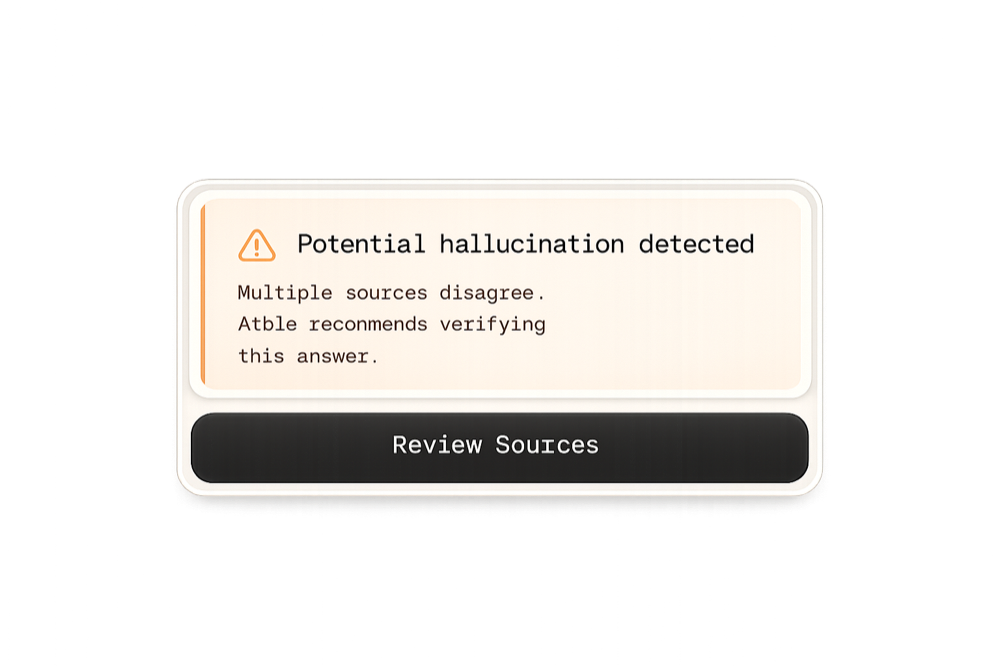
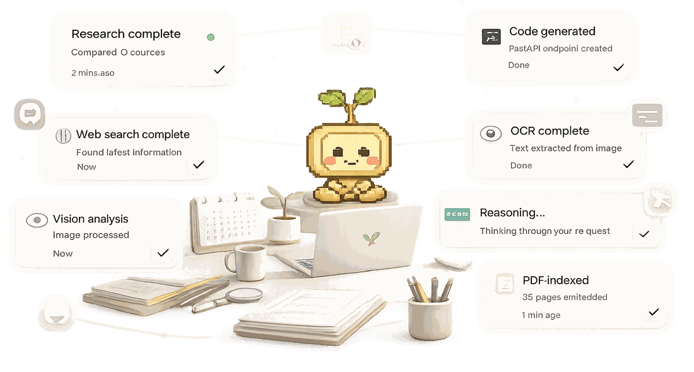
Arble reaches into the apps you already use, so the work happens where it already lives.

Mail, files, code and calendars all answer to the same agent — no tab-switching, no copy-paste, no second place to look.
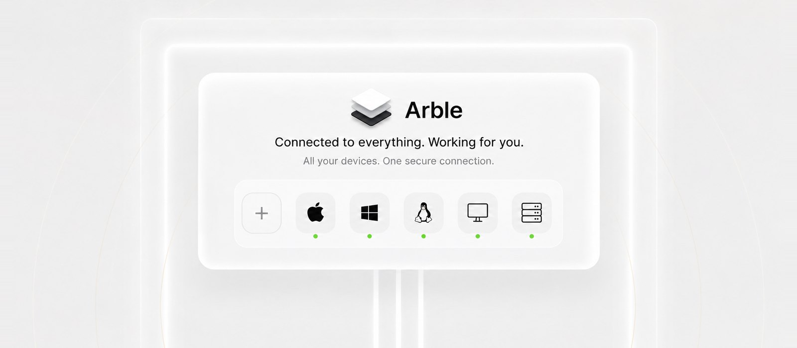
Phone, laptop, desktop or the server in the cupboard — pair once and the same agent, memory and permissions follow you onto each of them.

Every request runs the same five stages — understand, plan, execute, verify, complete — and you can watch it move through each one.
Pair once and your phone drives the machine — trackpad, keyboard, files and screen. macOS, Windows or Linux, over your own network, with no relay in the middle holding the session.
Get Started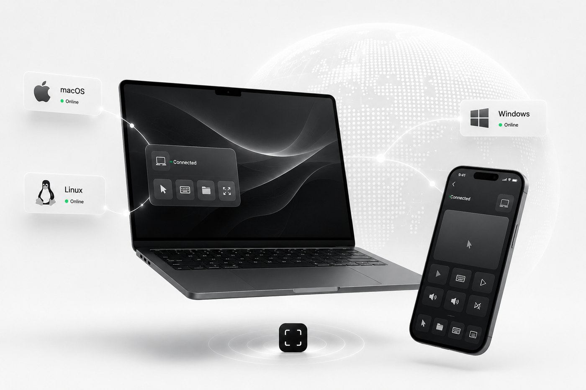
Desktop or phone, macOS, Windows or Linux — one interface, one memory, one set of permissions. Nothing here is a cut-down companion app that can only watch while the real work happens elsewhere.
Get Started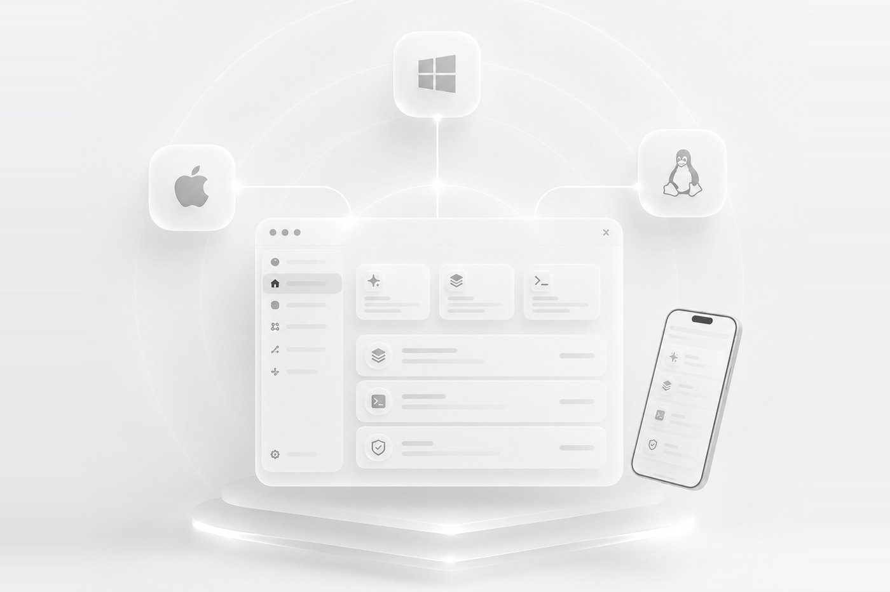
Arble reaches exactly as far as you let it. Every line past that point is yours to approve, revoke, or read back afterwards.
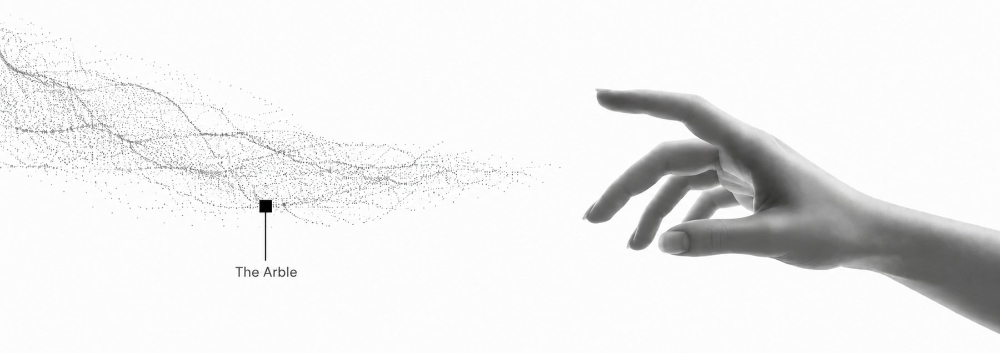
The reading, the drafting and the chasing — handled in one place, on hardware you already own.
Arble reads the mail, drafts the reply and files the result. You approve; it acts.
Notes, files and threads stay searchable, so you never explain the same thing twice.
Schedules and heartbeats run with the app closed, and every wake-up is logged for you to read back.
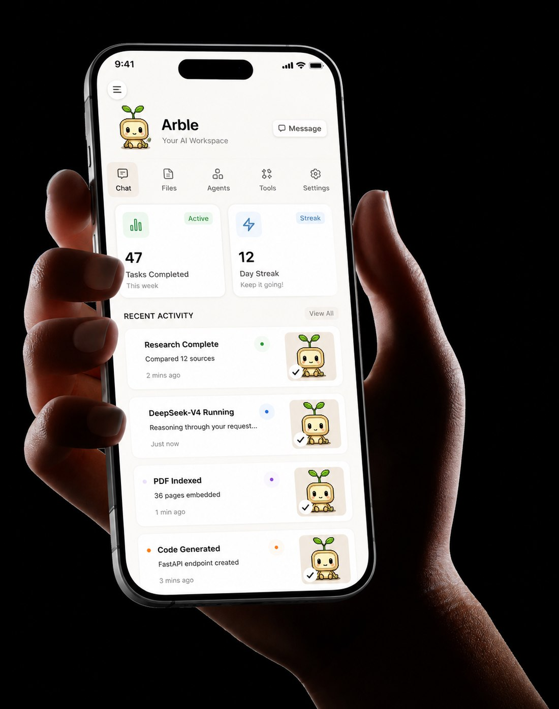
The whole loop is something you can look at — what it can reach, what it remembers, and what it did while you were away.


579 typed tools, one gate
Mail, calendars, files, code hosts, home devices and your own servers — 61 toolsets, every write stopping at the same permission prompt.
Counted in this build, not projected
35 chapters on how Arble works and how to run it. Free.
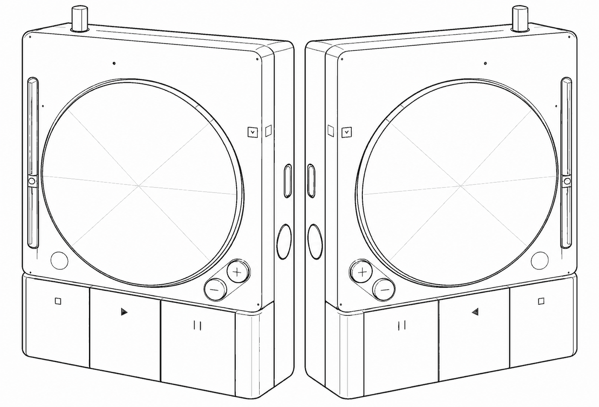
Bring your own models. Keep your own data. Start in about four minutes.